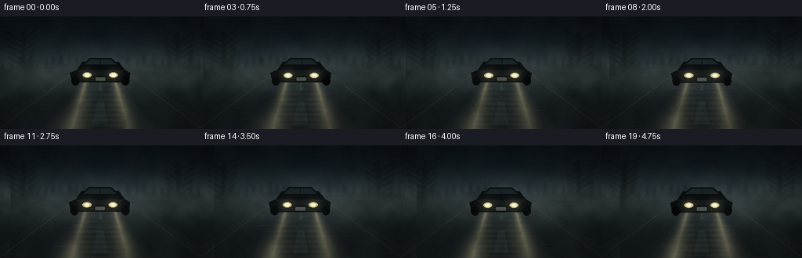
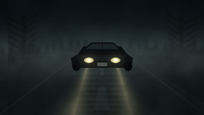

CODING AGENTS AS PIXEL WORLD MODELS
traex/GPT-5.6-Sol · phygen_051
点击播放 · 原生 RGB 像素
逐轮保存的候选
回放视频、检查图与代码变化。
每份候选均可单独播放。实际图片检查记录在下方工具轨迹中。
候选 01播放与检查图
点击播放 · 原生 RGB 像素

展开代码变化
--- 上一保存版本
+++ 本次保存版本
@@ -0,0 +1,231 @@
+from pathlib import Path
+import numpy as np
+from PIL import Image, ImageDraw, ImageFilter
+import artifact_io
+
+W, H, N = 256, 144, 20
+S = 2
+w, h = W*S, H*S
+rng = np.random.default_rng(51051)
+
+# Large, soft fog fields. Their horizontal advection makes motion coherent.
+def soft_texture(seed, cell, contrast=1.0):
+ r = np.random.default_rng(seed)
+ gh = max(3, h//cell + 4)
+ gw = max(3, w//cell + 16)
+ a = (r.random((gh, gw))*255).astype(np.uint8)
+ im = Image.fromarray(a).resize((w+160, h), Image.Resampling.BICUBIC)
+ im = im.filter(ImageFilter.GaussianBlur(cell*.42))
+ z = np.asarray(im, np.float32)/255.0
+ z = np.clip(.5 + (z-.5)*contrast, 0, 1)
+ return z
+
+fog_large = soft_texture(1783, 44, 1.6)
+fog_medium = soft_texture(8134, 20, 1.45)
+fog_fine = soft_texture(3351, 8, 1.15)
+
+# Stars/distant mist specks are fixed in world space.
+particles = []
+for _ in range(54):
+ particles.append((rng.uniform(0,w), rng.uniform(80, h-6), rng.uniform(.35,1.25), rng.uniform(.15,.75)))
+
+Y, X = np.mgrid[0:h, 0:w].astype(np.float32)
+frames = []
+
+def poly(draw, pts, fill):
+ draw.polygon([(int(x*S),int(y*S)) for x,y in pts], fill=fill)
+
+def ellipse(draw, box, fill):
+ draw.ellipse(tuple(int(v*S) for v in box), fill=fill)
+
+def line(draw, pts, fill, width=1):
+ draw.line([(int(x*S),int(y*S)) for x,y in pts], fill=fill, width=max(1,int(width*S)))
+
+for fi in range(N):
+ t = fi/(N-1)
+ # Slowly closing distance, plus tiny suspension sway.
+ grow = 1.0 + .035*t
+ sway = .65*np.sin(fi*.34)
+ horizon = 68.0
+
+ # Advected multi-scale density field; opposite speeds give evolving curls.
+ sh1 = int(fi*2.5)
+ sh2 = int(-fi*1.35)
+ sh3 = int(fi*3.8)
+ n1 = np.roll(fog_large, sh1, axis=1)[:, :w]
+ n2 = np.roll(fog_medium, sh2, axis=1)[:, :w]
+ n3 = np.roll(fog_fine, sh3, axis=1)[:, :w]
+ density = np.clip(.50*n1 + .34*n2 + .16*n3, 0, 1)
+
+ yy = Y/(h-1)
+ # Blue-black night, lighter around the fogbound horizon.
+ horizon_glow = np.exp(-((Y-horizon*S)/(30*S))**2)
+ base = np.zeros((h,w,3), np.float32)
+ top = np.array([4,10,15], np.float32)
+ bottom = np.array([11,18,22], np.float32)
+ base[:] = top + (bottom-top)*yy[...,None]
+ base += horizon_glow[...,None]*np.array([18,24,25])[None,None,:]
+
+ # Background silhouettes: forest ridges and bare roadside trees.
+ bg = Image.new('RGBA',(w,h),(0,0,0,0)); d = ImageDraw.Draw(bg)
+ # far irregular conifer line
+ far_pts = [(0,int(70*S))]
+ x=0
+ rr=np.random.default_rng(220)
+ while x <= W:
+ y0=62+rr.uniform(-6,5)
+ far_pts += [(int(x*S),int(y0*S)),(int((x+3)*S),int((y0-rr.uniform(5,14))*S)),(int((x+6)*S),int((y0+2)*S))]
+ x += rr.uniform(7,13)
+ far_pts += [(w,int(88*S)),(0,int(88*S))]
+ d.polygon(far_pts, fill=(3,9,11,175))
+ # large edge trees frame the road
+ for side in (-1,1):
+ bx = 30 if side<0 else 226
+ line(d, [(bx,20),(bx + side*2,86)], (3,7,8,220), 5)
+ for k in range(7):
+ by=28+k*8
+ reach=18-k*.9
+ line(d, [(bx,by),(bx-side*reach,by-12)], (3,8,9,205), 3-k*.18)
+ line(d, [(bx,by+4),(bx+side*(reach+5),by-8)], (3,8,9,205), 2.5)
+ bg = bg.filter(ImageFilter.GaussianBlur(1.2*S))
+ bg_np=np.asarray(bg,np.float32)
+ a=bg_np[...,3:4]/255
+ base=base*(1-a)+bg_np[...,:3]*a
+
+ # Terrain and wet road perspective.
+ scene=Image.fromarray(np.uint8(np.clip(base,0,255)), 'RGB').convert('RGBA')
+ ov=Image.new('RGBA',(w,h),(0,0,0,0)); d=ImageDraw.Draw(ov)
+ poly(d,[(0,73),(95,68),(87,144),(0,144)],(4,10,11,235))
+ poly(d,[(161,68),(256,73),(256,144),(169,144)],(4,10,11,235))
+ poly(d,[(95,68),(161,68),(280,144),(-24,144)],(9,14,16,245))
+ # road edge glints
+ line(d,[(96,70),(-2,144)],(76,86,79,55),1)
+ line(d,[(160,70),(258,144)],(76,86,79,52),1)
+ # center markings mostly swallowed by fog and glare
+ poly(d,[(127,82),(129,82),(130,94),(126,94)],(118,119,92,30))
+ poly(d,[(124,109),(132,109),(137,137),(118,137)],(116,116,86,23))
+ # puddle streaks
+ for _ in range(28):
+ py=rng.uniform(88,143); perspective=(py-67)/77
+ px=128+rng.normal(0,52*perspective)
+ length=rng.uniform(3,14)*perspective
+ col=(85,91,80,int(rng.uniform(10,29)))
+ line(d,[(px-length,py),(px+length,py)],col,.45)
+ scene=Image.alpha_composite(scene,ov)
+
+ arr=np.asarray(scene.convert('RGB'),np.float32)
+ # Heavy ambient fog: strongest at horizon and in drifting banks.
+ bank = .18 + .42*np.exp(-((Y-72*S)/(27*S))**2) + .11*(Y/h)
+ fog_a = np.clip(bank*(.48+.72*density),0,.70)
+ fog_col=np.zeros_like(arr)
+ fog_col[...,0]=62+18*horizon_glow
+ fog_col[...,1]=73+18*horizon_glow
+ fog_col[...,2]=76+15*horizon_glow
+ arr = arr*(1-fog_a[...,None]) + fog_col*fog_a[...,None]
+
+ # Headlight origins on the car. Beams diverge in perspective toward camera.
+ hy=(75.0 + 1.4*t)*S
+ origins=[((111.3+sway)*S,-.29),((144.7+sway)*S,.29)]
+ beam_alpha=np.zeros((h,w),np.float32)
+ core_alpha=np.zeros((h,w),np.float32)
+ for hx, slope in origins:
+ dy=np.maximum(0,Y-hy)
+ center=hx+slope*dy
+ dist=np.abs(X-center)
+ outerw=3.0*S+.52*dy
+ mainw=1.5*S+.285*dy
+ outer=np.clip(1-dist/outerw,0,1)**1.55
+ core=np.clip(1-dist/mainw,0,1)**1.8
+ forward=(Y>=hy-1*S).astype(np.float32)
+ # scattered light is textured by the local fog concentration
+ scatter=.56+.72*density
+ fade=.96-.25*np.clip(dy/(70*S),0,1)
+ beam_alpha += outer*forward*scatter*fade*.25
+ core_alpha += core*forward*(.58+.56*density)*fade*.24
+ beam_alpha=np.clip(beam_alpha,0,.53)
+ core_alpha=np.clip(core_alpha,0,.43)
+ warm=np.empty_like(arr); warm[:]=[231,220,164]
+ arr=arr*(1-beam_alpha[...,None])+warm*beam_alpha[...,None]
+ corecol=np.empty_like(arr); corecol[:]=[255,239,179]
+ arr=arr*(1-core_alpha[...,None])+corecol*core_alpha[...,None]
+
+ # Long wet-road reflections, broken horizontally by puddles.
+ refl=np.zeros((h,w),np.float32)
+ for hx,_ in origins:
+ dx=(X-hx)/(16*S + .23*np.maximum(Y-hy,0))
+ vertical=np.exp(-dx*dx*2.5)*np.exp(-np.maximum(Y-hy,0)/(70*S))*(Y>hy)
+ broken=.45+.35*np.sin(Y*.48+fi*.25)+.20*n3
+ refl += vertical*np.clip(broken,0,1)*.14
+ refl *= np.clip((Y-78*S)/(30*S),0,1)
+ rcol=np.empty_like(arr);rcol[:]=[201,190,133]
+ arr=arr*(1-refl[...,None])+rcol*refl[...,None]
+
+ # Car overlays the emerging beam origins: front-facing dark compact SUV.
+ scene=Image.fromarray(np.uint8(np.clip(arr,0,255)),'RGB').convert('RGBA')
+ car=Image.new('RGBA',(w,h),(0,0,0,0)); d=ImageDraw.Draw(car)
+ cx=128+sway
+ def tx(x): return cx+(x-128)*grow
+ def ty(y): return 76+(y-76)*grow+1.4*t
+ poly(d,[(tx(98),ty(68)),(tx(105),ty(58)),(tx(151),ty(58)),(tx(159),ty(68)),
+ (tx(166),ty(72)),(tx(164),ty(84)),(tx(92),ty(84)),(tx(89),ty(72))],(7,11,13,248))
+ # roof and windscreen
+ poly(d,[(tx(107),ty(60)),(tx(114),ty(53)),(tx(142),ty(53)),(tx(150),ty(60))],(8,13,15,235))
+ poly(d,[(tx(108),ty(61)),(tx(115),ty(55)),(tx(141),ty(55)),(tx(148),ty(61))],(25,34,37,240))
+ line(d,[(tx(128),ty(55)),(tx(128),ty(61))],(6,10,11,210),1)
+ # bonnet, grille, wheels
+ poly(d,[(tx(98),ty(69)),(tx(158),ty(69)),(tx(151),ty(75)),(tx(105),ty(75))],(13,18,19,245))
+ poly(d,[(tx(112),ty(76)),(tx(144),ty(76)),(tx(141),ty(82)),(tx(115),ty(82))],(2,5,6,250))
+ for gy in (77.5,79.5,81.5): line(d,[(tx(116),ty(gy)),(tx(140),ty(gy))],(28,32,30,180),.55)
+ ellipse(d,(tx(91),ty(76),tx(101),ty(88)),(2,4,5,250)); ellipse(d,(tx(155),ty(76),tx(165),ty(88)),(2,4,5,250))
+ # license plate muted by mist
+ d.rounded_rectangle((int(tx(122)*S),int(ty(78)*S),int(tx(134)*S),int(ty(82)*S)),radius=1*S,fill=(91,99,92,155))
+ scene=Image.alpha_composite(scene,car)
+
+ # Headlights and optical bloom drawn after body.
+ bloom=Image.new('RGBA',(w,h),(0,0,0,0)); bd=ImageDraw.Draw(bloom)
+ lamp_y=75.1+1.4*t
+ for hx in (111.3+sway,144.7+sway):
+ ellipse(bd,(hx-13,lamp_y-10,hx+13,lamp_y+10),(255,232,155,36))
+ ellipse(bd,(hx-7,lamp_y-5,hx+7,lamp_y+5),(255,238,173,75))
+ bloom=bloom.filter(ImageFilter.GaussianBlur(6*S))
+ scene=Image.alpha_composite(scene,bloom)
+ lamps=Image.new('RGBA',(w,h),(0,0,0,0)); ld=ImageDraw.Draw(lamps)
+ for hx in (111.3+sway,144.7+sway):
+ ellipse(ld,(hx-5.6,lamp_y-3.25,hx+5.6,lamp_y+3.25),(219,204,142,235))
+ ellipse(ld,(hx-3.4,lamp_y-2.25,hx+3.4,lamp_y+2.25),(255,248,203,255))
+ ellipse(ld,(hx-1.35,lamp_y-1.1,hx+1.35,lamp_y+1.1),(255,255,239,255))
+ scene=Image.alpha_composite(scene,lamps)
+
+ # A nearer semi-transparent fog ribbon passes across car and shafts.
+ fg=Image.new('RGBA',(w,h),(0,0,0,0)); fd=ImageDraw.Draw(fg)
+ ribbon_x = -90 + fi*10.5
+ fd.ellipse((int(ribbon_x*S),int(60*S),int((ribbon_x+220)*S),int(93*S)),fill=(128,139,137,18))
+ fd.ellipse((int((ribbon_x-50)*S),int(79*S),int((ribbon_x+155)*S),int(111*S)),fill=(111,124,123,14))
+ fg=fg.filter(ImageFilter.GaussianBlur(13*S))
+ scene=Image.alpha_composite(scene,fg)
+
+ # Suspended droplets/motes only become visible inside the illuminated cones.
+ motes=Image.new('RGBA',(w,h),(0,0,0,0)); md=ImageDraw.Draw(motes)
+ for px,py,pr,pa in particles:
+ xx=(px + fi*(.8+pa))%(w+30)-15
+ # Evaluate approximate beam mask at mote's current point.
+ ix=int(np.clip(xx,0,w-1)); iy=int(np.clip(py,0,h-1))
+ illum=float(np.clip(beam_alpha[iy,ix]*2.0,0,1))
+ if illum>.08:
+ rr=pr*S
+ md.ellipse((int(xx-rr),int(py-rr),int(xx+rr),int(py+rr)),fill=(255,241,190,int(75*illum*pa)))
+ motes=motes.filter(ImageFilter.GaussianBlur(.35*S))
+ scene=Image.alpha_composite(scene,motes)
+
+ # Gentle vignette and sensor-like fine grain.
+ final=np.asarray(scene.convert('RGB'),np.float32)
+ nx=(X-w/2)/(w/2); ny=(Y-h/2)/(h/2)
+ vign=np.clip(1-.21*(nx*nx+.55*ny*ny),.67,1)
+ final*=vign[...,None]
+ grain=np.random.default_rng(9000+fi).normal(0,1.15,(h,w,1))
+ final+=grain
+ out=Image.fromarray(np.uint8(np.clip(final,0,255))).resize((W,H),Image.Resampling.LANCZOS)
+ frames.append(np.asarray(out,dtype=np.uint8))
+
+frames=np.stack(frames)
+artifact_io.save(frames, Path(__file__).resolve().parent)
候选 02播放与检查图

可观测工具轨迹
实际执行的命令与返回图片。
命令 1exit 0
/bin/bash -lc "cat prompt.txt && printf '\\n---RULES---\\n' && cat GENERATION_RULES.md && printf '\\n---SPEC---\\n' && cat task_spec.json"
命令 2exit 0
/bin/bash -lc "find . -maxdepth 2 -type f -printf '%p\\n' | sort | head -200 && printf '\\nTOOLS\\n' && command -v ffmpeg || true; command -v blender || true; command -v python3 || true"
命令 3exit 0
/bin/bash -lc 'cat artifact_io.py'
命令 4exit 0
/bin/bash -lc "cat > generate.py <<'PY'
from pathlib import Path
import numpy as np
from PIL import Image, ImageDraw, ImageFilter
import artifact_io
W, H, N = 256, 144, 20
S = 2
w, h = W*S, H*S
rng = np.random.default_rng(51051)
# Large, soft fog fields. Their horizontal advection makes motion coherent.
def soft_texture(seed, cell, contrast=1.0):
r = np.random.default_rng(seed)
gh = max(3, h//cell + 4)
gw = max(3, w//cell + 16)
a = (r.random((gh, gw))*255).astype(np.uint8)
im = Image.fromarray(a).resize((w+160, h), Image.Resampling.BICUBIC)
im = im.filter(ImageFilter.GaussianBlur(cell*.42))
z = np.asarray(im, np.float32)/255.0
z = np.clip(.5 + (z-.5)*contrast, 0, 1)
return z
fog_large = soft_texture(1783, 44, 1.6)
fog_medium = soft_texture(8134, 20, 1.45)
fog_fine = soft_texture(3351, 8, 1.15)
# Stars/distant mist specks are fixed in world space.
particles = []
for _ in range(54):
particles.append((rng.uniform(0,w), rng.uniform(80, h-6), rng.uniform(.35,1.25), rng.uniform(.15,.75)))
Y, X = np.mgrid[0:h, 0:w].astype(np.float32)
frames = []
def poly(draw, pts, fill):
draw.polygon([(int(x*S),int(y*S)) for x,y in pts], fill=fill)
def ellipse(draw, box, fill):
draw.ellipse(tuple(int(v*S) for v in box), fill=fill)
def line(draw, pts, fill, width=1):
draw.line([(int(x*S),int(y*S)) for x,y in pts], fill=fill, width=max(1,int(width*S)))
for fi in range(N):
t = fi/(N-1)
# Slowly closing distance, plus tiny suspension sway.
grow = 1.0 + .035*t
sway = .65*np.sin(fi*.34)
horizon = 68.0
# Advected multi-scale density field; opposite speeds give evolving curls.
sh1 = int(fi*2.5)
sh2 = int(-fi*1.35)
sh3 = int(fi*3.8)
n1 = np.roll(fog_large, sh1, axis=1)[:, :w]
n2 = np.roll(fog_medium, sh2, axis=1)[:, :w]
n3 = np.roll(fog_fine, sh3, axis=1)[:, :w]
density = np.clip(.50*n1 + .34*n2 + .16*n3, 0, 1)
yy = Y/(h-1)
# Blue-black night, lighter around the fogbound horizon.
horizon_glow = np.exp(-((Y-horizon*S)/(30*S))**2)
base = np.zeros((h,w,3), np.float32)
top = np.array([4,10,15], np.float32)
bottom = np.array([11,18,22], np.float32)
base[:] = top + (bottom-top)*yy[...,None]
base += horizon_glow[...,None]*np.array([18,24,25])[None,None,:]
# Background silhouettes: forest ridges and bare roadside trees.
bg = Image.new('RGBA',(w,h),(0,0,0,0)); d = ImageDraw.Draw(bg)
# far irregular conifer line
far_pts = [(0,int(70*S))]
x=0
rr=np.random.default_rng(220)
while x <= W:
y0=62+rr.uniform(-6,5)
far_pts += [(int(x*S),int(y0*S)),(int((x+3)*S),int((y0-rr.uniform(5,14))*S)),(int((x+6)*S),int((y0+2)*S))]
x += rr.uniform(7,13)
far_pts += [(w,int(88*S)),(0,int(88*S))]
d.polygon(far_pts, fill=(3,9,11,175))
# large edge trees frame the road
for side in (-1,1):
bx = 30 if side<0 else 226
line(d, [(bx,20),(bx + side*2,86)], (3,7,8,220), 5)
for k in range(7):
by=28+k*8
reach=18-k*.9
line(d, [(bx,by),(bx-side*reach,by-12)], (3,8,9,205), 3-k*.18)
line(d, [(bx,by+4),(bx+side*(reach+5),by-8)], (3,8,9,205), 2.5)
bg = bg.filter(ImageFilter.GaussianBlur(1.2*S))
bg_np=np.asarray(bg,np.float32)
a=bg_np[...,3:4]/255
base=base*(1-a)+bg_np[...,:3]*a
# Terrain and wet road perspective.
scene=Image.fromarray(np.uint8(np.clip(base,0,255)), 'RGB').convert('RGBA')
ov=Image.new('RGBA',(w,h),(0,0,0,0)); d=ImageDraw.Draw(ov)
poly(d,[(0,73),(95,68),(87,144),(0,144)],(4,10,11,235))
poly(d,[(161,68),(256,73),(256,144),(169,144)],(4,10,11,235))
poly(d,[(95,68),(161,68),(280,144),(-24,144)],(9,14,16,245))
# road edge glints
line(d,[(96,70),(-2,144)],(76,86,79,55),1)
line(d,[(160,70),(258,144)],(76,86,79,52),1)
# center markings mostly swallowed by fog and glare
poly(d,[(127,82),(129,82),(130,94),(126,94)],(118,119,92,30))
poly(d,[(124,109),(132,109),(137,137),(118,137)],(116,116,86,23))
# puddle streaks
for _ in range(28):
py=rng.uniform(88,143); perspective=(py-67)/77
px=128+rng.normal(0,52*perspective)
length=rng.uniform(3,14)*perspective
col=(85,91,80,int(rng.uniform(10,29)))
line(d,[(px-length,py),(px+length,py)],col,.45)
scene=Image.alpha_composite(scene,ov)
arr=np.asarray(scene.convert('RGB'),np.float32)
# Heavy ambient fog: strongest at horizon and in drifting banks.
bank = .18 + .42*np.exp(-((Y-72*S)/(27*S))**2) + .11*(Y/h)
fog_a = np.clip(bank*(.48+.72*density),0,.70)
fog_col=np.zeros_like(arr)
fog_col[...,0]=62+18*horizon_glow
fog_col[...,1]=73+18*horizon_glow
fog_col[...,2]=76+15*horizon_glow
arr = arr*(1-fog_a[...,None]) + fog_col*fog_a[...,None]
# Headlight origins on the car. Beams diverge in perspective toward camera.
hy=(75.0 + 1.4*t)*S
origins=[((111.3+sway)*S,-.29),((144.7+sway)*S,.29)]
beam_alpha=np.zeros((h,w),np.float32)
core_alpha=np.zeros((h,w),np.float32)
for hx, slope in origins:
dy=np.maximum(0,Y-hy)
center=hx+slope*dy
dist=np.abs(X-center)
outerw=3.0*S+.52*dy
mainw=1.5*S+.285*dy
outer=np.clip(1-dist/outerw,0,1)**1.55
core=np.clip(1-dist/mainw,0,1)**1.8
forward=(Y>=hy-1*S).astype(np.float32)
# scattered light is textured by the local fog concentration
scatter=.56+.72*density
fade=.96-.25*np.clip(dy/(70*S),0,1)
beam_alpha += outer*forward*scatter*fade*.25
core_alpha += core*forward*(.58+.56*density)*fade*.24
beam_alpha=np.clip(beam_alpha,0,.53)
core_alpha=np.clip(core_alpha,0,.43)
warm=np.empty_like(arr); warm[:]=[231,220,164]
arr=arr*(1-beam_alpha[...,None])+warm*beam_alpha[...,None]
corecol=np.empty_like(arr); corecol[:]=[255,239,179]
arr=arr*(1-core_alpha[...,None])+corecol*core_alpha[...,None]
# Long wet-road reflections, broken horizontally by puddles.
refl=np.zeros((h,w),np.float32)
for hx,_ in origins:
dx=(X-hx)/(16*S + .23*np.maximum(Y-hy,0))
vertical=np.exp(-dx*dx*2.5)*np.exp(-np.maximum(Y-hy,0)/(70*S))*(Y>hy)
broken=.45+.35*np.sin(Y*.48+fi*.25)+.20*n3
refl += vertical*np.clip(broken,0,1)*.14
refl *= np.clip((Y-78*S)/(30*S),0,1)
rcol=np.empty_like(arr);rcol[:]=[201,190,133]
arr=arr*(1-refl[...,None])+rcol*refl[...,None]
# Car overlays the emerging beam origins: front-facing dark compact SUV.
scene=Image.fromarray(np.uint8(np.clip(arr,0,255)),'RGB').convert('RGBA')
car=Image.new('RGBA',(w,h),(0,0,0,0)); d=ImageDraw.Draw(car)
cx=128+sway
def tx(x): return cx+(x-128)*grow
def ty(y): return 76+(y-76)*grow+1.4*t
poly(d,[(tx(98),ty(68)),(tx(105),ty(58)),(tx(151),ty(58)),(tx(159),ty(68)),
(tx(166),ty(72)),(tx(164),ty(84)),(tx(92),ty(84)),(tx(89),ty(72))],(7,11,13,248))
# roof and windscreen
poly(d,[(tx(107),ty(60)),(tx(114),ty(53)),(tx(142),ty(53)),(tx(150),ty(60))],(8,13,15,235))
poly(d,[(tx(108),ty(61)),(tx(115),ty(55)),(tx(141),ty(55)),(tx(148),ty(61))],(25,34,37,240))
line(d,[(tx(128),ty(55)),(tx(128),ty(61))],(6,10,11,210),1)
# bonnet, grille, wheels
poly(d,[(tx(98),ty(69)),(tx(158),ty(69)),(tx(151),ty(75)),(tx(105),ty(75))],(13,18,19,245))
poly(d,[(tx(112),ty(76)),(tx(144),ty(76)),(tx(141),ty(82)),(tx(115),ty(82))],(2,5,6,250))
for gy in (77.5,79.5,81.5): line(d,[(tx(116),ty(gy)),(tx(140),ty(gy))],(28,32,30,180),.55)
ellipse(d,(tx(91),ty(76),tx(101),ty(88)),(2,4,5,250)); ellipse(d,(tx(155),ty(76),tx(165),ty(88)),(2,4,5,250))
# license plate muted by mist
d.rounded_rectangle((int(tx(122)*S),int(ty(78)*S),int(tx(134)*S),int(ty(82)*S)),radius=1*S,fill=(91,99,92,155))
scene=Image.alpha_composite(scene,car)
# Headlights and optical bloom drawn after body.
bloom=Image.new('RGBA',(w,h),(0,0,0,0)); bd=ImageDraw.Draw(bloom)
lamp_y=75.1+1.4*t
for hx in (111.3+sway,144.7+sway):
ellipse(bd,(hx-13,lamp_y-10,hx+13,lamp_y+10),(255,232,155,36))
ellipse(bd,(hx-7,lamp_y-5,hx+7,lamp_y+5),(255,238,173,75))
bloom=bloom.filter(ImageFilter.GaussianBlur(6*S))
scene=Image.alpha_composite(scene,bloom)
lamps=Image.new('RGBA',(w,h),(0,0,0,0)); ld=ImageDraw.Draw(lamps)
for hx in (111.3+sway,144.7+sway):
ellipse(ld,(hx-5.6,lamp_y-3.25,hx+5.6,lamp_y+3.25),(219,204,142,235))
ellipse(ld,(hx-3.4,lamp_y-2.25,hx+3.4,lamp_y+2.25),(255,248,203,255))
ellipse(ld,(hx-1.35,lamp_y-1.1,hx+1.35,lamp_y+1.1),(255,255,239,255))
scene=Image.alpha_composite(scene,lamps)
# A nearer semi-transparent fog ribbon passes across car and shafts.
fg=Image.new('RGBA',(w,h),(0,0,0,0)); fd=ImageDraw.Draw(fg)
ribbon_x = -90 + fi*10.5
fd.ellipse((int(ribbon_x*S),int(60*S),int((ribbon_x+220)*S),int(93*S)),fill=(128,139,137,18))
fd.ellipse((int((ribbon_x-50)*S),int(79*S),int((ribbon_x+155)*S),int(111*S)),fill=(111,124,123,14))
fg=fg.filter(ImageFilter.GaussianBlur(13*S))
scene=Image.alpha_composite(scene,fg)
# Suspended droplets/motes only become visible inside the illuminated cones.
motes=Image.new('RGBA',(w,h),(0,0,0,0)); md=ImageDraw.Draw(motes)
for px,py,pr,pa in particles:
xx=(px + fi*(.8+pa))%(w+30)-15
# Evaluate approximate beam mask at mote's current point.
ix=int(np.clip(xx,0,w-1)); iy=int(np.clip(py,0,h-1))
illum=float(np.clip(beam_alpha[iy,ix]*2.0,0,1))
if illum>.08:
rr=pr*S
md.ellipse((int(xx-rr),int(py-rr),int(xx+rr),int(py+rr)),fill=(255,241,190,int(75*illum*pa)))
motes=motes.filter(ImageFilter.GaussianBlur(.35*S))
scene=Image.alpha_composite(scene,motes)
# Gentle vignette and sensor-like fine grain.
final=np.asarray(scene.convert('RGB'),np.float32)
nx=(X-w/2)/(w/2); ny=(Y-h/2)/(h/2)
vign=np.clip(1-.21*(nx*nx+.55*ny*ny),.67,1)
final*=vign[...,None]
grain=np.random.default_rng(9000+fi).normal(0,1.15,(h,w,1))
final+=grain
out=Image.fromarray(np.uint8(np.clip(final,0,255))).resize((W,H),Image.Resampling.LANCZOS)
frames.append(np.asarray(out,dtype=np.uint8))
frames=np.stack(frames)
artifact_io.save(frames, Path(__file__).resolve().parent)
PY
python3 generate.py
python3 - <<'PY'
import numpy as np
z=np.load('pixels.npz')['pixels']
print(z.shape,z.dtype,'frames differ',[(z[:,:,i]"'!=z[:,:,i-1]).mean() for i in range(1,4)])
PY'视觉工具实际返回图片 1

视觉工具实际返回图片 2

保存候选 2 份；完成命令 4 次；可验证图片返回 2 张。原始 API 响应与完整日志保留在本地。